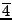

Next:
Combination of accent and
Up:
An efficient notation for
Previous:
Use of accent for
Use of overline to denote
Maelkalam
When a
Sollu
has to be played in the next higher speed or
Maelkalam
, we use an overline above the
Sollu
to denote that. For example,

means ``
Tha Ka Tha Ri Ki Ta Tha Ka
'' and so on.
Suriya Subramanian 2007-01-11